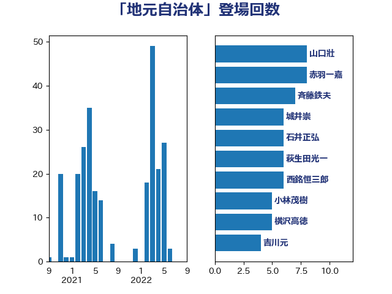

単語「地元自治体」

| 山口壯 | 自由民主党 | 8 回 |
| 赤羽一嘉 | 公明党 | 8 回 |
| 斉藤鉄夫 | 公明党 | 7 回 |
| 城井崇 | 立憲民主党 | 6 回 |
| 石井正弘 | 自由民主党 | 6 回 |
| 萩生田光一 | 自由民主党 | 6 回 |
| 西銘恒三郎 | 自由民主党 | 6 回 |
| 小林茂樹 | 自由民主党 | 5 回 |
| 横沢高徳 | 立憲民主党 | 5 回 |
| 吉川元 | 立憲民主党 | 4 回 |
| 新垣邦男 | 立憲民主党 | 4 回 |
| 梶山弘志 | 自由民主党 | 4 回 |
| 清水貴之 | 日本維新の会 | 4 回 |
| 舟山康江 | 国民民主党 | 4 回 |
| 和田有一朗 | 日本維新の会 | 3 回 |
| 寺田静 | 無所属 | 3 回 |
| 江島潔 | 自由民主党 | 3 回 |
| 若松謙維 | 公明党 | 3 回 |
| 井上信治 | 自由民主党 | 2 回 |
| 伊波洋一 | 無所属 | 2 回 |
| 佐々木紀 | 自由民主党 | 2 回 |
| 小泉進次郎 | 自由民主党 | 2 回 |
| 平木大作 | 公明党 | 2 回 |
| 松野博一 | 自由民主党 | 2 回 |
| 渡辺猛之 | 自由民主党 | 2 回 |
| 源馬謙太郎 | 立憲民主党 | 2 回 |
| 田村貴昭 | 日本共産党 | 2 回 |
| 福重隆浩 | 公明党 | 2 回 |
| 篠原豪 | 立憲民主党 | 2 回 |
| 美延映夫 | 日本維新の会 | 2 回 |
| 西田昭二 | 自由民主党 | 2 回 |
| 赤嶺政賢 | 日本共産党 | 2 回 |
| 野上浩太郎 | 自由民主党 | 2 回 |
| 野間健 | 立憲民主党 | 2 回 |
| 三木亨 | 自由民主党 | 1 回 |
| 丸川珠代 | 自由民主党 | 1 回 |
| 五十嵐清 | 自由民主党 | 1 回 |
| 冨樫博之 | 自由民主党 | 1 回 |
| 加藤勝信 | 自由民主党 | 1 回 |
| 加藤鮎子 | 自由民主党 | 1 回 |
| 務台俊介 | 自由民主党 | 1 回 |
| 勝部賢志 | 立憲民主党 | 1 回 |
| 吉良よし子 | 日本共産党 | 1 回 |
| 堤かなめ | 立憲民主党 | 1 回 |
| 大岡敏孝 | 自由民主党 | 1 回 |
| 大西英男 | 自由民主党 | 1 回 |
| 宗清皇一 | 自由民主党 | 1 回 |
| 小宮山泰子 | 立憲民主党 | 1 回 |
| 小熊慎司 | 立憲民主党 | 1 回 |
| 山下芳生 | 日本共産党 | 1 回 |
| 岩渕友 | 日本共産党 | 1 回 |
| 岸田文雄 | 自由民主党 | 1 回 |
| 川合孝典 | 国民民主党 | 1 回 |
| 徳永エリ | 立憲民主党 | 1 回 |
| 掘井健智 | 日本維新の会 | 1 回 |
| 斎藤嘉隆 | 立憲民主党 | 1 回 |
| 有村治子 | 自由民主党 | 1 回 |
| 朝日健太郎 | 自由民主党 | 1 回 |
| 末松信介 | 自由民主党 | 1 回 |
| 松川るい | 自由民主党 | 1 回 |
| 梅村みずほ | 日本維新の会 | 1 回 |
| 榛葉賀津也 | 国民民主党 | 1 回 |
| 泉田裕彦 | 自由民主党 | 1 回 |
| 福田昭夫 | 立憲民主党 | 1 回 |
| 稲津久 | 公明党 | 1 回 |
| 細田健一 | 自由民主党 | 1 回 |
| 舞立昇治 | 自由民主党 | 1 回 |
| 菅家一郎 | 自由民主党 | 1 回 |
| 菅直人 | 立憲民主党 | 1 回 |
| 菅義偉 | 自由民主党 | 1 回 |
| 赤澤亮正 | 自由民主党 | 1 回 |
| 逢坂誠二 | 立憲民主党 | 1 回 |
| 重徳和彦 | 立憲民主党 | 1 回 |
| 金子恵美 | 立憲民主党 | 1 回 |
| 鈴木隼人 | 自由民主党 | 1 回 |
| 長坂康正 | 自由民主党 | 1 回 |
| 長峯誠 | 自由民主党 | 1 回 |
| 高橋千鶴子 | 日本共産党 | 1 回 |